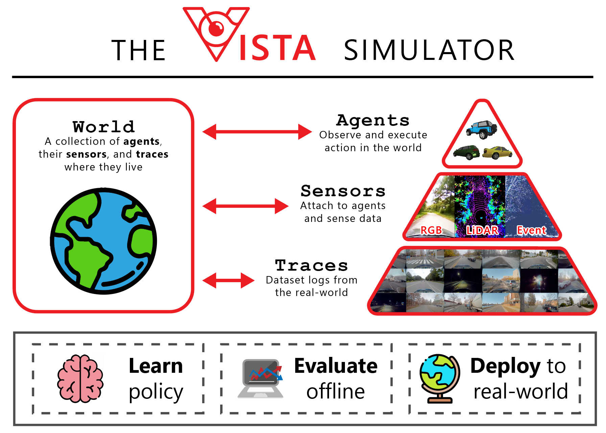

Introduction¶
What is VISTA?¶
Simulators are typically model-based, which means that they are constructed by manually designing 3D models of the world and their environment. Because these models are drawn by human artists, they inevitably face a large photorealism and semantic gap to reality.
VISTA is fundamentally different in that it is a data-driven simulation engine. By taking as input real data of the physical world, VISTA aims to reconstruct that world and synthesize novel viewpoints within the environment. Because VISTA is built from real data, it side steps the typical challenges of photorealism and sim-to-real transferability.
VISTA provides a flexible interface for taking large datasets and building entire virtual worlds. Within these worlds, virtual agents can be spawned, perception data rendered, new tasks and objectives defined, as agents move and interact with each other and the surrounding environment.
Goals of VISTA¶
Highly flexible and photorealistic data-driven simulation: VISTA is a platform for transforming real-world data into virtual worlds for embodied agent simulation. Different sensing modalities, environments, dynamics, and tasks with varying complexity are supported.
Research friendly API: VISTA was designed with research in-mind. All code is written in Python and is highly modular, customizable, and extensible. We highly encourage contributions to the community code.
Sim-to-real and real-to-sim: Ability to transfer to and from reality and the corresponding digital twins built in VISTA. Policies can be trained in VISTA for deployment in reality. Conversely, policies can be extensively stress tested and certified in VISTA prior to deployment.
Closed-loop (active) testing: Passive evaluation on pre-collected datasets provides a mediocre evaluation metric for control. VISTA aims to convert offline (open-loop) datasets into closed-loop testbeds, for faithful evaluations.
New applications and benchmarks: VISTA has enabled many new advances on the algorithmic and applications side. We are excited to see even more advances brought to photorealistic data-driven simulation including: policy learning, testing and verification, augmented reality.
The Simulator¶
The VISTA API provides a modular framework for defining environments, spawning agents with perception sensors, and constructing task objectives for learning and evaluation. The components below provide a high-level overview of the different pieces that VISTA is built on.
vista.World¶
A World is an object container that holds:
a list of
vista.Traceobjects, which defines the data for constructing the environmenta list of
vista.Entities(e.g., agents or sensors), which live within the virtual world
To construct a World users must provide the paths to the desired traces. After construction, entities can be spawned and placed within the world.
vista.Trace¶
A Trace is an object that represents a single dataset log from the real world. Traces are stored on the hard drive and streamed into memory as needed by VISTA. The format of a trace on disk must be compatible with VISTA to be represented as a Trace object.
Traces can be annotated to remove segments which should not be used within VISTA (e.g., if segments contain noisy or non-stable driving behavior).
vista.Entity
An Entity represents an object within the VISTA environment that can be spawned and has a specific location/orientation. Entities can be “attached” to other entities or operate independently in the environment. Examples of entities include Agents and Sensors.
vista.Agent¶
An Agent is one type of vista.Entity that can be placed within the VISTA environment. Agents are entities that can take “actions” to move around.
vista.Car is an example of an Agent which has vehicle dynamics and receives observations of the world through sensors that are attached to it. Multiple Agents can be spawned within a single World (i.e., multi-agent autonomous driving).
vista.Sensor¶
A Sensor is another type of vista.Entity that interfaces with real data to simulate new observations of novel viewpoints corresponding to the sensor’s location in the virtual world. Sensors can be placed on and attached to an Agent and can include RGB cameras, LiDAR, and event-based cameras.
Sensor Simulation¶
VISTA supports multi-sensor perception simulation including 2D RGB cameras, 3D LiDAR pointclouds, and also asynchronous event-based camera data. More details on spawning and configuring each of the sensors is provided in Basic Usage.
Warning
Multi-sensor simulation is in released but in beta form within the current version of VISTA. Stable simulation of non-camera data is will be rolled out progressively.
Tasks and environments¶
VISTA supports wrapping in the form of creating Tasks. Each task roughly follows OpenAI gym interface for reinforcement learning settings here (with member functions of the environments like reset, step and return values like (observation, reward, done, info)). More details are provided in the Tasks section of the API documentation.